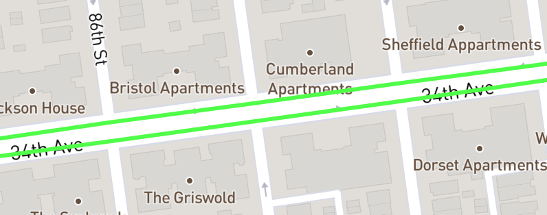

-
›
-
›
Protected Bike Lanes:
Protected Bike Lanes include all dedicated bike lanes that are seperated from vehicular traffic.
On-Street Bike Lanes:
Standard Bike lanes that mix with vehicular traffic.
Sharrows:
Marked routes mixed with vehicular traffic.
Citi Bike Docks:
Citi bike dock locations, updated April 2020. Learn more about Citi Bike and get a free month, exclusive to NYC Bike Map users here.
Bike Shelters:
There are a few dedicated bike shelter locations located throughout the city. Find out more here.
Standard Bike Racks:

Publically availible bike racks with capacity.
-
›
- Learn more about NYC Bike Map
- Get a free month of Citi Bike!